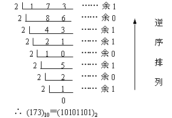
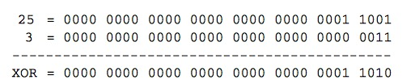

严格模式
"use strict";
ECMAscript 5 添加。 优点：消除缺陷语法、提高编译器效率、增加运行速度，为未来版本的js作铺垫
- 变量必须先声明
- 禁止使用with语句
- 创建eval作用域
- 禁止this指向全局
- 禁止在函数内部遍历调用栈
- 禁止删除变量
参考文档
数据类型
5 种简单数据类型：undefined null Boolean Number String 和 1 种复杂类型: Object.
typeof
能够监测 undefined boolean string number object function
undefined 与 null
undefined未初始化的变量null空对象指针
typeof null=> "object"
undefined与null的值相等
undefined == null=> true
true 与 false
| 类型 | true | false |
|---|---|---|
| Boolean | true | false |
| String | 非空字符串 | "" |
| Number | 非0 | 0 和 NaN |
| Object | 任何对象 | null |
| undefined | undefined |
注意
| run | console |
|---|---|
| false == 0 | true |
| false == null | false |
| false == undefined | false |
| false == "" | true |
| undefined == null | true |
| if (null){console.log(1)} | 不打印 |
| if (undefined){console.log(1)} | 不打印 |
NaN
NaN 是一种特殊的 Number. 且 NaN 不与任何值相等，包括 NaN 本身.
typeof NaN => "number"
NaN == NaN => false
isNaN()
接受任意一个类型的参数，尝试转换为数值。
| run | console |
|---|---|
| isNaN(NaN) | true |
| isNaN('10') | false |
| isNaN("some") | true |
Infinity
特殊的 Number 型， 表示无穷大。用0作除数会产生。
3 / 0=> Infinity
self == self ?
| run | console |
|---|---|
| NaN == NaN | false |
| Infinity == Infinity | true |
| {} == {} | false |
进制
十进制转二进制
- 整数
除2取余，逆序排列。

- 小数
乘2取整，顺序排列。

二进制转十进制
按权相加。

位操作
- 按位非 ~
本质未 取负数减1
~111 => -111 - 1 => -112
- 按位与 &
位对齐。都为1返回1，否则返回0。
如： 25 & 3 => 1

- 按位或 |
位对齐。都为0返回0，否则返回1。
如： 25 | 3 => 27

- 按位异或
位对齐。只有一个1则返回1，否则返回0。
如： 25 ^ 3 => 26

精度
JS所有的数值都是以64-bit的双精度浮点数存储(IEEE-754 64)。
- 位操作符不能直接操作64位的值，而是先转换成32位后，再做运算。
待研究: NaN 是怎么存储的?
参考文档
函数重载
多个同名函数，但是形参不同（个数或者类型不同），返回值也可不同，称之为重载函数。JS没有函数重载。
栈内存与堆内存
- 栈：为编译器自动分配和释放
- 堆：为成员分配和释放，由程序员自己申请、释放
变量
JS变量包含2种类型：基本类型值和引用类型值。JS所有函数都是按值传递。
- 基本类型：
undefined null blooean number string。可以操作保存在变量中的实际的值。 引用类型：
Object Array Date RegExp Function。值保存在内存对象里，不允许直接操作内存空间。当复制保存对象的某个变量时，操作的是对象的引用。但为对象添加属性时，操作的是实际的对象。基本类型的值在内存中占固定大小的空间，被保存在栈内存中
- 引用类型的值是对象，保存在堆内存中
作用域
变量的执行环境，决定了变量的生命周期以及访问权限。变量分为全局变量（全局环境）和局部变量（函数执行环境）。每次进入新的执行环境中，会创建一个变量的作用域链，保证执行环境有权访问的所有变量和函数的有序访问。
没有块级作用域
延长作用域链
try-catch语句的catch块with
instanceof 与 typeof
typeof。检测基本数据类型。instanceof。检测引用类型。